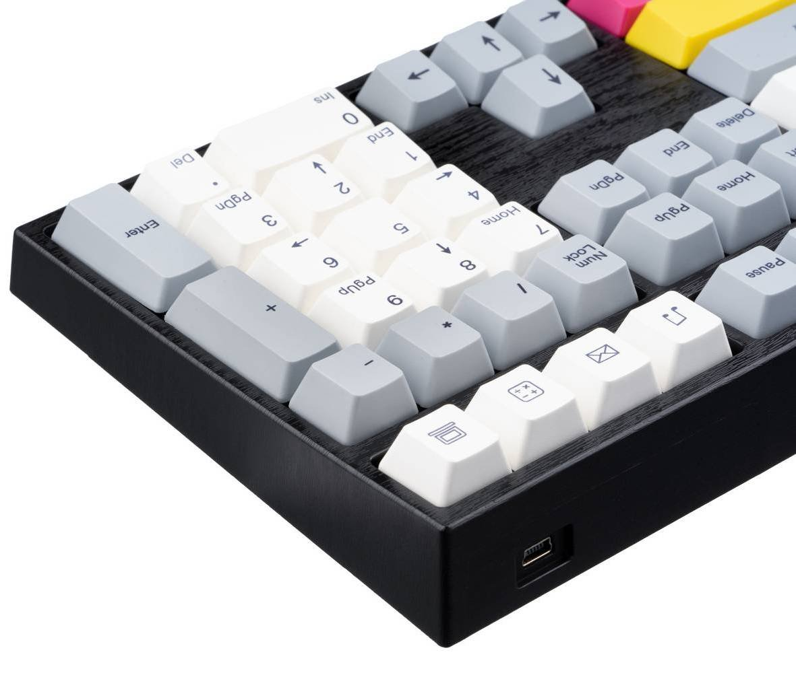
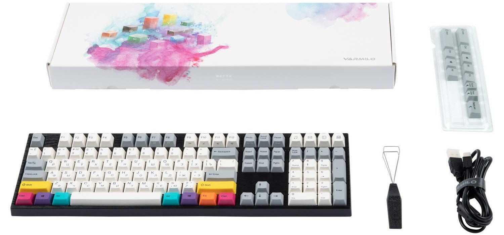

Основні
- Тип: Механічна
- Підключення: Дротове
- Форм-фактор Повнорозмірна
- Призначення: Геймерські
- Інтерфейс підключення: USB
- Розкладка клавіатури: Російська і англійська розкладки

Кабель
- Загальна кількість клавіш: 108 клавіш
- Перемикач: Cherry MX Red
- Формат розкладки: ANSI
- Підсвічування: Однокольорова
- Матеріал клавіш: Пластик

Додатково
- Сумісність з ОС: Windows 7/8/8.1/10
-
Додатково: Обробка будь-якої кількості одночасних натискань
клавіш з опцією N-key або 6-Key Rollover
- Матеріал: Пластик
- Габарити: 440 x 137 x 33 мм
- Вага: 1350 г
- Колір: Сірий з білим